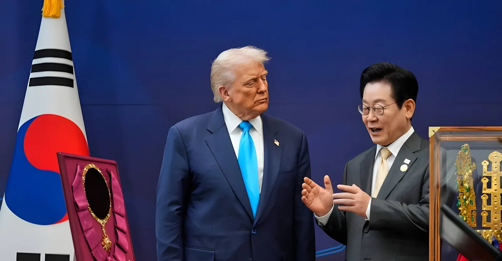

Le 16 août 2026, quelques heures avant le lancement des exercices annuels Ulchi Freedom Shield, Donald Trump a annoncé sur Truth Social avoir demandé au Pentagone de « réduire substantiellement » les manœuvres militaires conjointes avec la Corée du Sud, invoquant leur coût et sa « très bonne relation » avec Kim Jong-un. Washington et Séoul ont finalement écourté l'exercice de six jours, une décision prise sans concertation préalable qui a semé le doute à Séoul sur la solidité d'une alliance militaire vieille de sept décennies, tout en laissant Pyongyang de marbre.
Le 16 août 2026, quelques heures seulement avant le lancement des exercices conjoints Ulchi Freedom Shield, Donald Trump publie sur Truth Social un message annonçant avoir demandé au secrétaire à la Guerre Pete Hegseth de « réduire substantiellement » la participation américaine aux manœuvres. Le président justifie ce choix par le coût de l'exercice et par sa « très bonne relation » avec le dirigeant nord-coréen Kim Jong-un, affirmant que Pyongyang s'est montré « non menaçant et respectueux » depuis son retour à la Maison-Blanche. Il reproche également à Séoul d'avoir refusé de s'associer aux États-Unis pour la « dénucléarisation » de l'Iran, rapportant avoir reçu un « non merci » du président sud-coréen Lee Jae-myung. Ni le gouvernement sud-coréen ni les responsables américains sur le terrain n'avaient été informés à l'avance de cette décision, a confirmé devant le Parlement le ministre sud-coréen des Affaires étrangères Cho Hyun.
La Corée du Nord, elle, avait déjà donné le ton avant même l'annonce américaine : les 6 et 12 août, elle a tiré des missiles balistiques à courte portée en mer du Japon, dénonçant par la voix de son ministère des Affaires étrangères les exercices à venir comme une répétition d'invasion appelant une riposte « de dissuasion » plus forte.
Prévu du 17 au 27 août sur onze jours, l'exercice Ulchi Freedom Shield associe environ 18 000 militaires sud-coréens à des forces américaines, au Commandement des Nations unies et à plusieurs pays partenaires, combinant simulations de poste de commandement et manœuvres de terrain. Mercredi 19 août, l'état-major interarmées sud-coréen annonce que la durée de l'exercice sera « ajustée » à la demande de Washington : la phase de contre-offensive, particulièrement sensible pour Pyongyang, est purement supprimée, plusieurs manœuvres de terrain sont réduites ou converties en simulations informatiques, et l'exercice principal se termine dès le vendredi 21 août au lieu du 27. Le Pentagone assure toutefois que ces ajustements « préservent les objectifs essentiels » de préparation des forces américaines et qu'il n'y aura « aucune dégradation » de leurs capacités.
Lundi, la présidence du président Lee Jae-myung exprime l'espoir qu'une « relation amicale » entre Donald Trump et Kim Jong-un débouche sur un « dialogue de fond » susceptible de promouvoir la paix sur la péninsule coréenne — une déclaration qui suscite aussitôt une vive réaction des conservateurs de l'opposition, accusant le gouvernement de faire passer la reprise d'une diplomatie Kim-Trump avant les impératifs de sécurité nationale. Dès le lendemain, lors d'une réunion de cabinet, Lee Jae-myung corrige le tir en affirmant qu'« une alliance solide avec les États-Unis » demeure le « pilier » de la sécurité du pays. Devant le Parlement, le ministre des Affaires étrangères Cho Hyun assure que l'alliance reste « solide », tandis que son homologue de la Défense, Ahn Gyu-back, évoque des « consultations étroites » en cours avec Washington sur les contributions concrètes que Séoul pourrait apporter, y compris au large du détroit d'Ormuz.
Selon plusieurs analystes, dont Yang Uk, de l'Institut Asan à Séoul, le geste de Trump viserait moins à renouer le dialogue avec Pyongyang qu'à faire pression sur Séoul pour obtenir un soutien plus concret dans le dossier iranien — « comme s'il demandait à la Corée du Sud de prouver qu'elle l'aide sur l'Iran » en échange du maintien de l'exercice à son niveau habituel. Ce geste intervient alors que Washington réclame déjà à Séoul une hausse de sa contribution financière à la présence des 28 500 militaires américains sur son sol, et pousse à une réorientation de l'alliance vers la dissuasion de la Chine plutôt que la seule protection face à la Corée du Nord.
La Corée du Nord attend deux jours avant de réagir. Mercredi 19 août au soir, Kim Yo-jong, sœur influente du dirigeant nord-coréen, fait savoir par l'agence officielle KCNA que Pyongyang « n'a aucun intérêt » à commenter la décision américaine, ajoutant que « le caractère provocateur et agressif des manœuvres ne change pas, même si leur durée et leur ampleur ont été réduites ». Elle dément par ailleurs tout contact direct entre son frère et Donald Trump, alors que ce dernier affirmait quelques jours plus tôt que Kim Jong-un avait répondu favorablement à sa demande d'échange. Le ton de la déclaration, dépourvu de l'habituelle rhétorique virulente du régime, laisse penser que Pyongyang cherche à ménager la relation avec Trump tout en réclamant des concessions plus substantielles avant d'envisager un retour à la table des négociations.
La Corée du Nord tire des missiles balistiques à courte portée en mer du Japon, avant même le début de l'exercice.
Donald Trump annonce sur Truth Social vouloir « réduire substantiellement » les exercices conjoints avec Séoul.
Les manœuvres Ulchi Freedom Shield débutent malgré tout, comme prévu depuis plusieurs mois.
La présidence Lee affirme que l'alliance reste le « pilier » de la sécurité nationale ; le Japon réaffirme son soutien à la coopération trilatérale.
L'état-major sud-coréen confirme l'écourtement de l'exercice ; Kim Yo-jong déclare que « cela ne change rien ».
Fin anticipée de l'exercice principal, après cinq jours au lieu des onze initialement prévus.
Cet épisode s'inscrit dans une relance plus large des rapports de force entre Washington et Séoul depuis le retour de Donald Trump à la Maison-Blanche : accord commercial de juillet 2026 ramenant les droits de douane américains sur les produits sud-coréens de 25 % à 15 % en échange d'un engagement d'investissement de 350 milliards de dollars, pressions répétées pour que Séoul augmente sa contribution au stationnement des troupes américaines, et discussions sur une réorientation stratégique de l'alliance vers la dissuasion de la Chine. Séoul, de son côté, continue d'augmenter son propre budget de défense et pousse pour un transfert du contrôle opérationnel en temps de guerre, aujourd'hui détenu par Washington, avant la fin du mandat de Lee Jae-myung en 2030. Entre un allié américain de plus en plus prompt à évaluer l'alliance en termes de coûts et bénéfices, et une Corée du Nord qui ne voit dans ce geste qu'un ajustement cosmétique, l'avenir d'une coopération militaire forgée dans la guerre de Corée paraît, pour beaucoup à Séoul, plus incertain qu'à aucun autre moment depuis des décennies.
On August 16, 2026, just hours before the annual Ulchi Freedom Shield exercises were set to begin, Donald Trump announced on Truth Social that he had directed the Pentagon to "substantially reduce" joint military drills with South Korea, citing their cost and his "very good" relationship with Kim Jong Un. Washington and Seoul ultimately cut the exercise short by six days, a decision made without prior consultation that has left Seoul questioning the strength of a seven-decade-old military alliance, while leaving Pyongyang unmoved.
On August 16, 2026, just hours before the start of the joint Ulchi Freedom Shield exercises, Donald Trump posted on Truth Social that he had asked Secretary of War Pete Hegseth to "substantially reduce" the U.S. participation in the drills. The president justified the move by citing the cost of the exercise and his "very good" relationship with North Korean leader Kim Jong Un, saying Pyongyang had been "unthreatening and respectful" during his time in the White House. He also criticized Seoul for refusing to join the United States in the "denuclearization" of Iran, saying South Korean President Lee Jae-myung had told him "no thanks." Neither the South Korean government nor U.S. officials on the ground had been informed of the decision in advance, South Korean Foreign Minister Cho Hyun confirmed before parliament.
North Korea had already set the tone before the U.S. announcement: on August 6 and 12, it fired short-range ballistic missiles into the Sea of Japan, with its foreign ministry denouncing the upcoming exercises as a rehearsal for invasion that called for a stronger "deterrent" response.
Originally scheduled to run from August 17 to 27, the eleven-day Ulchi Freedom Shield exercise combines roughly 18,000 South Korean troops with U.S. forces, the UN Command and several partner nations, in a mix of command-post simulations and field training. On Wednesday, August 19, South Korea's Joint Chiefs of Staff announced that the exercise's duration would be "adjusted" at Washington's request: the counteroffensive phase, particularly sensitive for Pyongyang, was scrapped outright, several field-training events were scaled back or converted into computer simulations, and the main exercise ended on Friday, August 21, instead of the 27th. The Pentagon nonetheless said the adjustments "preserve essential readiness and training objectives" and that there would be "no degradation" to U.S. training goals.
On Monday, the office of President Lee Jae-myung expressed hope that a "friendly relationship" between Donald Trump and Kim Jong Un would lead to "meaningful dialogue" that could promote peace on the Korean Peninsula — a statement that immediately drew a strong backlash from conservative opposition lawmakers, who accused the government of putting the resumption of Kim-Trump diplomacy ahead of national security concerns. The very next day, at a cabinet meeting, Lee Jae-myung corrected course, stressing that "a solid alliance with the United States" remained the "pillar" of the country's security. Before parliament, Foreign Minister Cho Hyun said the alliance remained "strong," while Defense Minister Ahn Gyu-back spoke of "close consultations" under way with Washington on the concrete contributions Seoul could make, including near the Strait of Hormuz.
According to several analysts, including Yang Uk of Seoul's Asan Institute, Trump's move was likely less about restarting dialogue with Pyongyang than about pressuring Seoul for more concrete support on the Iran issue — "as if he's asking South Korea to show it's helping him over Iran" in exchange for keeping the exercise at its usual scale. The move comes as Washington is already pressing Seoul to raise its financial contribution toward the 28,500 U.S. troops stationed on its soil, and pushing for the alliance to be reoriented more toward deterring China rather than solely defending against North Korea.
North Korea waited two days before reacting. On the evening of Wednesday, August 19, Kim Yo Jong, the influential sister of the North Korean leader, said via state news agency KCNA that Pyongyang had "no interest" in commenting on the U.S. decision, adding that "the provocative, aggressive nature of the drills won't change even though their duration and size were reduced." She also denied any direct contact between her brother and Donald Trump, after the U.S. president had claimed days earlier that Kim Jong Un had responded favorably to his outreach. The statement's notably muted tone, lacking the regime's usual harsh rhetoric, suggests Pyongyang may be trying to manage the relationship with Trump while holding out for bigger concessions before considering a return to the negotiating table.
North Korea fires short-range ballistic missiles into the Sea of Japan, ahead of the exercise's start.
Donald Trump announces on Truth Social he wants to "substantially reduce" the joint exercises with Seoul.
The Ulchi Freedom Shield drills begin as originally scheduled, despite the announcement.
The Lee administration says the alliance remains the "pillar" of national security; Japan reaffirms support for trilateral cooperation.
South Korea's military confirms the exercise has been cut short; Kim Yo Jong says it "changes nothing."
The main exercise ends early, after five days instead of the eleven originally planned.
This episode fits into a broader recalibration of the Washington-Seoul relationship since Donald Trump's return to the White House: a July 2026 trade deal lowering U.S. tariffs on South Korean goods from 25% to 15% in exchange for a $350 billion investment pledge, repeated pressure for Seoul to pay more toward hosting U.S. troops, and talk of reorienting the alliance toward deterring China. For its part, Seoul continues to raise its own defense spending and is pushing to complete the transfer of wartime operational control, currently held by Washington, before the end of Lee Jae-myung's term in 2030. Between a U.S. ally increasingly quick to weigh the alliance in terms of costs and benefits, and a North Korea that sees the move as no more than a cosmetic adjustment, the future of a military partnership forged in the Korean War looks, to many in Seoul, more uncertain than it has in decades.